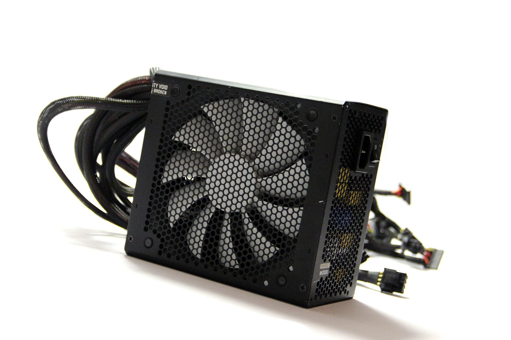
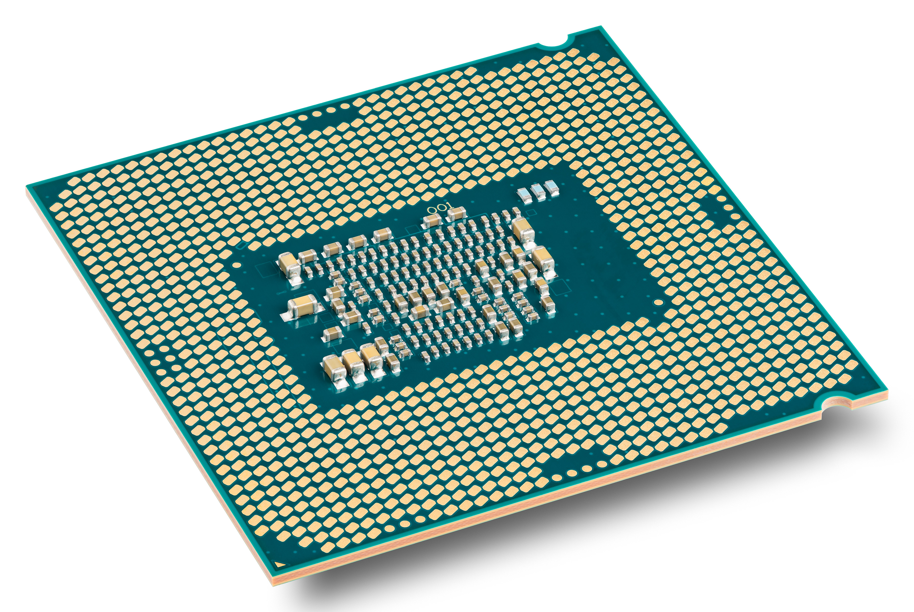
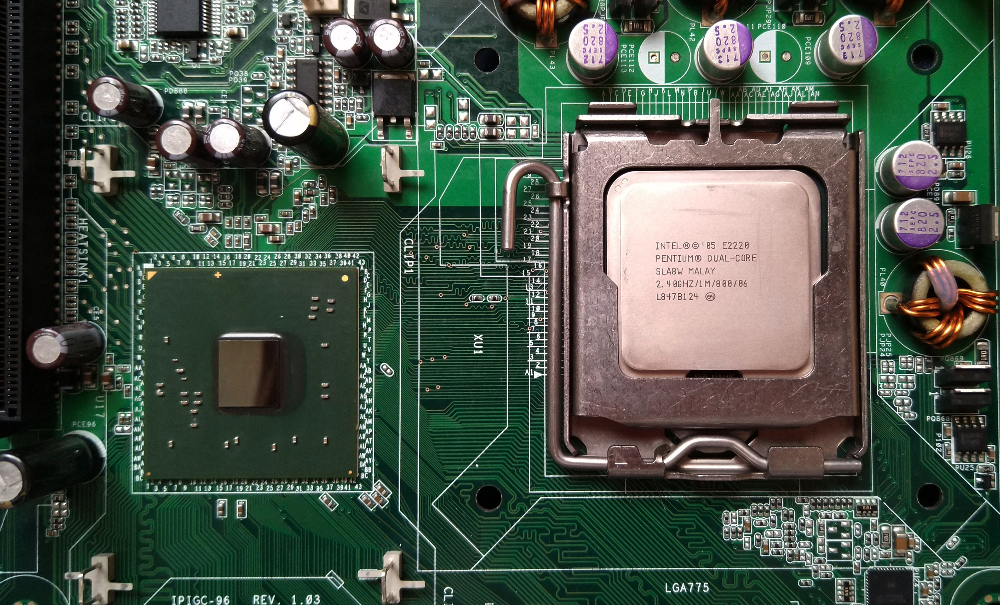
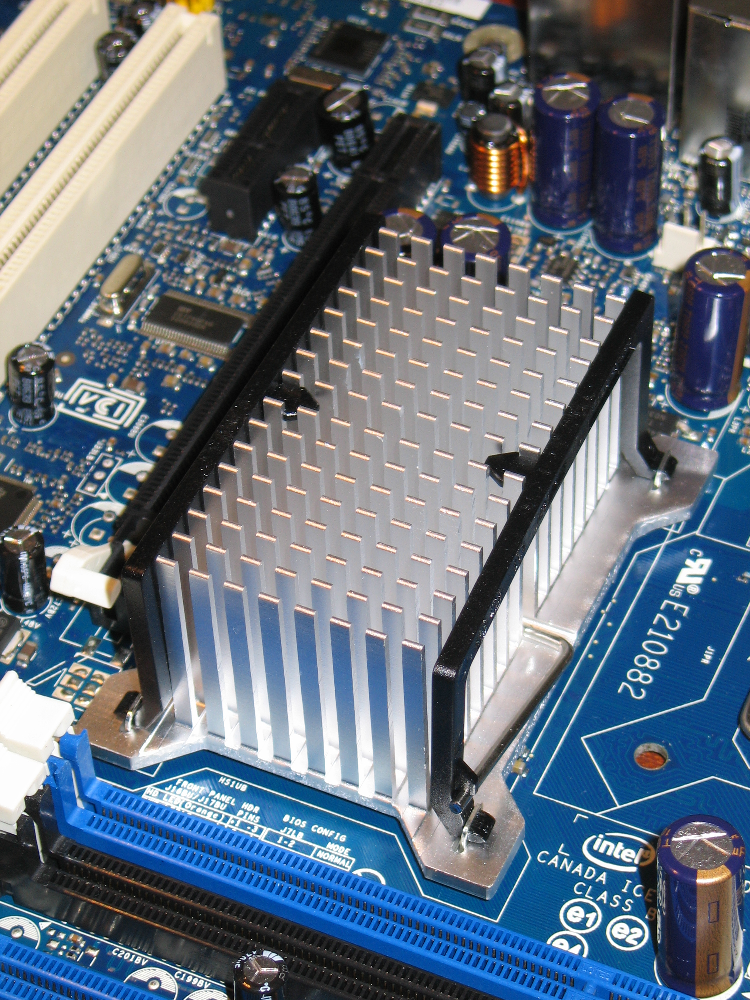
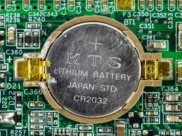
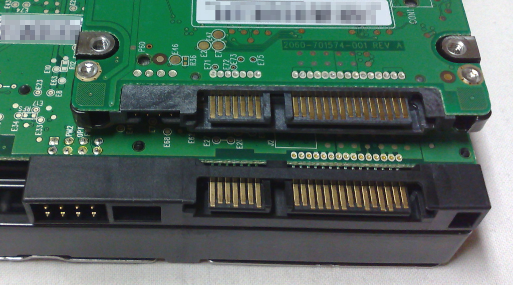
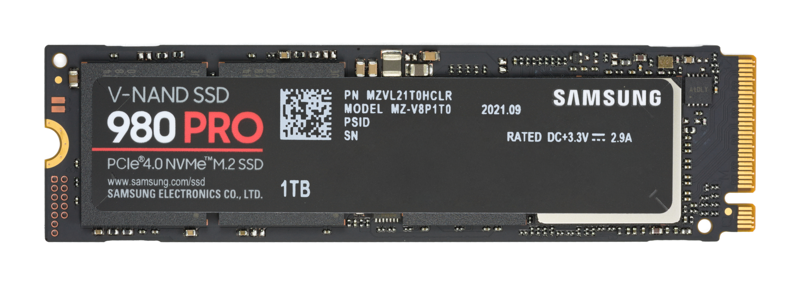
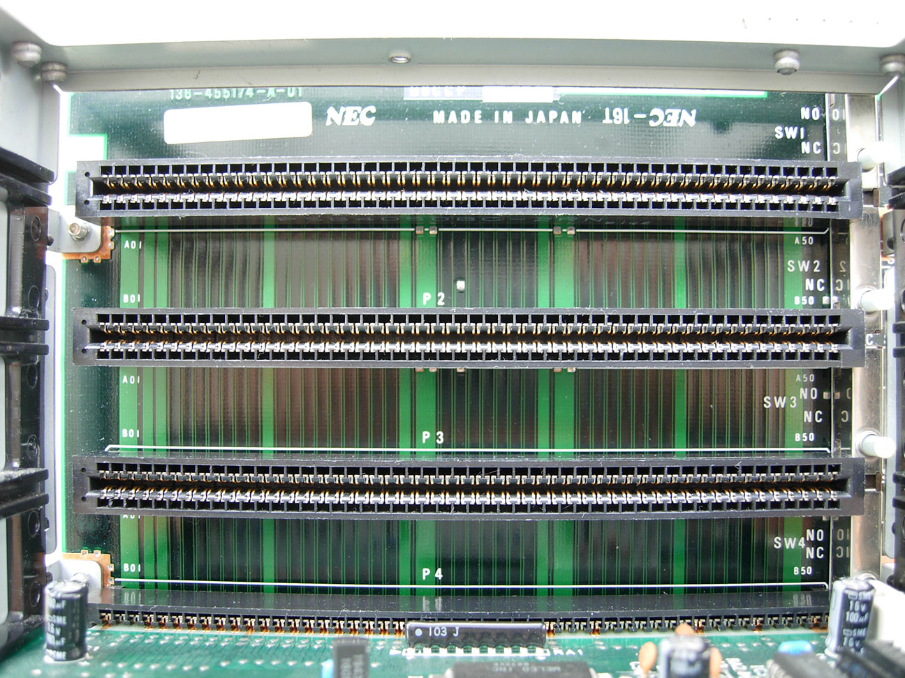

In the modern world, the heart of our technological advancement is thanks to the creation of the computers. Currently, 6.04 billion people right now utilize the internet to their hearts content, while 5.66 billion of those users utilize an aspect of the internet called “social media” in sharing, texting, and sending anything to their friends, loved ones, followers, etc. Ever since the creation of the internet, we can always say thank you to the computers, and inventors for pushing forward that innovation. However, we should also be thankful for the sum of the computer’s parts. The computer’s entire system, including the equivalent of to our heart, and brain, are stored under something called the “motherboard”.
The motherboard in general is a large printed circuit that holds the computer's parts, distributes power, and facilitates communication between those parts. Therefore, while some say that the core of the computer is the central processing unit, the actual board that holds and allows the core to be useful is the motherboard. In general, the motherboard and all of its parts is all you need for it to be fully called a computer in this modern world, no case is necessarily needed. All-in-all, every component of the computer is essential to its functions, so let us delve deep into the components of a motherboard.





Every modern storage device uses either the two storage interfaces:



In order to control and facilitate these components, the motherboard utilizes firmware. Firmware is a program embedded onto hardware (such as motherboards) in order to facilitate communication between other hardware. The firmware used by older 16-bit systems is the “Basic Input / Output System” (or BIOS), while newer systems use the “Unified Extensible Firmware Interface” or UEFI, which are stored in the Electrically Erasable Programmable Read Only Memory. The main role of the two types of computer firmware:
In general, both the two firmware types act the same, the main difference between BIOS and UEFI are the following:
Therefore, UEFI is more widely used, and more widely favored as it allows support for modern components. With the combination of the core components, firmware, and other required components, the motherboard will communicate, facilitate, and power these components, thus causing the “computer” to come to life. All motherboards require core components to function, and some have the same form factor, while others are larger or smaller. Most modern motherboards utilize modern technology, while older boards use older technology that paved the way to its modern counterpart. With the vast amount of motherboards floating around the world, a list is required in order to check what components, functions, and hardware are supported. Below is that table which shows the more common motherboards used in this day and age, and additionally historical motherboards that have helped shape the computing world.
| Form Factor | Build | # of CPU Slots | # of Memory Slots | Supported Chipsets | BIOS Type | PCI / PCI-e Slots | SATA Slots | Main Aspects |
|---|---|---|---|---|---|---|---|---|
| AT Motherboard | 12" × 13.8" | 1 | 2 - 4 | Intel 430FX, AMD 640 | Legacy BIOS | 2 - 4 | None |
|
| ATX Motherboard | 12" × 9.6" | 1 | 4 | Intel Z, B, H, W Series; AMD X, B, A, TRX Series | UEFI | 3 - 6 | 4 - 6 |
|
| BTX Motherboard | 12.8" × 10.5" | 1 | 4 | Intel 915, 945, 965, G31, G965, Q965 | Legacy BIOS or UEFI | 3 | 4 - 6 |
|
| Extended-ATX Motherboard | 12" × 13" | 1 - 2 | 6 - 8 | Intel Z, B, H, W Series; AMD X, B, A, TRX Series | UEFI | 4 - 8 | 4 |
|
| LPX Motherboard | 9" × 13" | 1 | 4 | Intel 430, 440BX; SiS 85C461 | Legacy BIOS or UEFI | 2 - 3 | None |
|
| Micro-ATX Motherboard | 9.61" × 9.61" | 1 | 4 | Intel Z, B, H, W Series; AMD X, B, A Series | UEFI | 1 - 2 | 4 |
|
| Mini ITX Motherboard | 6.69" × 6.69" | 1 | 2 | Intel Z, B, H, W Series; AMD X, B, A Series | UEFI | 1 | 2 - 4 |
|
| Pico ITX Motherboard | 3.9" × 2.8" | 1 | 1 | Intel Atom, N-Series, C Series, ARM | UEFI | 1 - 2 | 1 |
|
In general, every motherboard has its own specific use case specifically catered to those users, yet they all support every core component required for a motherboard to function. All of these components, from the central processing unit to the expansion slots are still present on every motherboard on the list, with some limitations in the older models. The chipset is what allows these components to function and to talk directly with each other using the CPU, while the firmware utilizes the chipset to check, and communicate with the components in order to send, and move the control of these components to the operating system. Some motherboards work fine in absence of certain non-essential components, which yields less power consumption, and allows for more flexible form factors at the cost of a more limited experience. Some motherboards even remove the possibility of changing, and upgrading essential components in order to save space or cost, which is not ideal for long-term usability. One day, as technology advances, there is a chance that newer components can be optimized further into smaller sizes, allowing small form factor motherboards to be even closer to their tower / regular form factor boards. When that day comes, will those components slowly shrink down the regular form factor, or will those components be stuffed with new technologies instead, constantly changing what motherboard manufacturers should support?